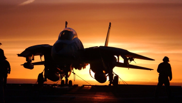
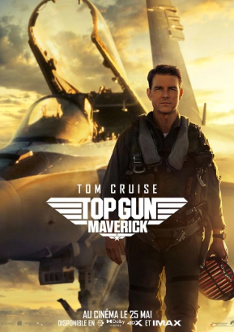

You must surely know the "Top Gun" franchise, 2 superb films which are above all about aviation, we find ourselves immersed in a school of aerial combat of the American Navy. You don't know Top Gun? This article is for you!

What is Top Gun?
When you say just those two words it sums up a whole meaning, It's an action movie with a lot of special effects and breathtaking scenes that have left their mark on cinema. There are currently 2 films in this franchise, Top Gun released in 1986 is the one that propelled the career of the main actor Tom Cruise in cinema. But also, Top Gun Maverick, the sequel to the 1986 film, was recently released in 2022 and is probably still available in your local cinema at the time of writing.

Cover of the 1986 film
1986
Here is a short summary of the 1986 film (spoiler alert)
"The story takes place in the late 1980s, during the final years of the Cold War. During a routine air patrol, two fighter jets encounter two other aircraft considered hostile by their hierarchy. But not everything goes according to plan."
To preserve you, we will not reveal the sequel. However, if you want to know the whole film, we invite you to watch Top Gun (1986)!

Cover of the 2022 film
2022
Still not convinced? Well here is a summary of the sequel released in 2022. (spoiler alert)
"The fighter pilot and captain "Maverick" is back. (already present in 1986) after 30 years of service, he finds himself a test pilot for a new prototype supersonic aircraft. This one can exceed the speed of Mach 11 (in other words 11 times the speed of sound) but once again the pilot is faced with a problem. Will he succeed?"
Once again, you will have to go to a cinema for the rest of the film. We don't want to be responsible for any "mass spoilers".
Trailer of the film
The directors of Top Gun & Top Gun Maverick
More about the director,
Originally, the two Top Gun films were not made by the same director:
Tony Scott for the 1986 film and Joseph Kosinski for the 2022 film.
Tony Scott unfortunately passed away, we will introduce you to Joseph Kosinki earlier on without giving him any credit. merits.
Joseph Kosinki was born on May 3, 1974 in Marshalltown, Iowa. He is a well-known director in the field of computer graphics and computer-generated imagery. He made his big screen debut with the science fiction film "Disney Digital 3-D Tron: Legacy. (sequel to the 1982 film Tron).
His previous work has consisted mainly of commercials including: Starry Night, the official Halo 3 trailer and Mad World, the official Gears of War trailer.
He also directed Top Gun Maverick, released in 2022.

Filmography of the director
Below is the filmography of Joseph Kosinski
Feature films
- 2010: Tron: Legacy
- 2013: Oblivion
- 2017: Line of Fire
- 2022: Spiderhead
Short film
Advertisements
- 2006: Gears of War: Mad World
- 2006: Halo 3: Starry Night
- 2011: Halo 4: Awakening

Gears of War is a video game created by Epic Games, it is a 3rd person shooter (TPS)

Halo 3 is a video game created by Bungie Studios, it is a first person shooter (FPS)

Halo 4 is a video game created by 343 Industries, it is a video game of shooting at my 1st person (FPS) (continuation of Halo 3)
For more information:
Top Gun:
Wikipédia: Top Gun
Top Gun Maverick:
Wikipédia: Top Gun Maverick